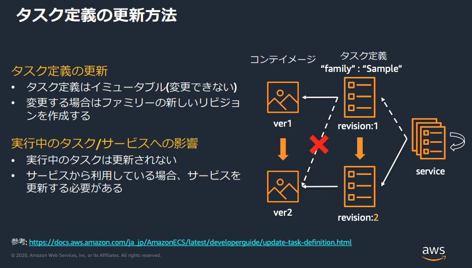
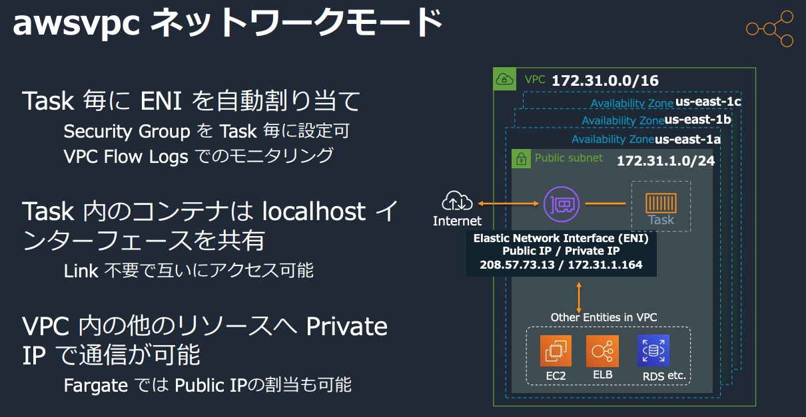

Docker 一般

- レジストリは dockerhub または Amazon ECR
- ECR 使う場合の Dockerfile の FROM は ECR の URL になる。
FROM 012345678910.dkr.ecr.us-east-1.amazonaws.com/base-image
...
- https://aws.amazon.com/jp/blogs/news/build-a-continuous-delivery-pipeline-for-your-container-images-with-amazon-ecr-as-source/
- docker build を行う環境で ECR から pull する権限 を付ける必要がある
- 開発者の IAM ユーザー／ロール
- CodeBuild プロジェクトのサービスロール
コンテナイメージ作成のベストプラクティス？

- 1つめは再現性に関するプラクティス
- 続く3つはサイズに関するプラクティス？
- 最後のは大きいベースイメージを使わないということでサイズに関することでもあるが、構成管理やセキュリティにも関わる。
コンテナを使った CI/CD でのアーティファクト・デプロイは Docker イメージ単位となり、そのバージョニングはタグで行える。

- ベースイメージをセキュリティチームが提供している。
AWS のコンテナサービス


コントロールプレーン
- ECS/EKS
- コンテナのデプロイ・死活監視等。
- AZ サービス
データプレーン
- コンテナのホスト: OS + Docker + エージェント (kubelet 等)
- EC2
- リザーブドやスポットインスタンスも使える。
- EC2 Auto Scaling でスケーリングできる。
- ECS 用の AMI を使用する。
- Fargate
- インスタンスクラスタのプロビジョニングやスケールが不要。
レジストリ
- ECR: Elastic Container Registry
- パブリックには公開できない。
- S3 をストレージとして使用。
- 暗号化、IAM によるアクセス制限がある。

- ＊ 印は Fargate についての説明
Amazon ECS
概要

Task
- 1つのタスクを構成する複数のコンテナ群が起動される。
- Task Definition でタスク内に起動する各コンテナを実際に定義する。
- (複数の)コンテナ定義、コンテナの CPU/メモリサイズ、タスク実行ロール
- コンテナへのボリュームマッピングやポートマッピング
- ネットワークモード (VPC)
- docker-compose.yaml 相当の設定
Service
- Task の希望実行数（desired count）の維持
- 異常終了した Task の自動再起動（自己修復 / Auto Healing）
- ELB と連携してトラフィックをルーティング
- 起動方式を指定: Launch Type（EC2 / Fargate）または Capacity Provider Strategy
- デプロイ管理: Rolling update / Blue-Green（CodeDeploy）
- Service Auto Scaling
Cluster
- 実行環境（インスタンス）のクラスタ
- EC2 or Fargate

Ref.
- https://d1.awsstatic.com/webinars/jp/pdf/services/20200422_BlackBelt_Amazon_ECS_Share.pdf
- https://d1.awsstatic.com/webinars/jp/pdf/services/20190731_AWS-BlackBelt_AmazonECS_DeepDive_Rev.pdf
Task Definition

- アプリケーションで実行するコンテナ群のワンセットの定義。
- Task Definition で定義されたコンテナ群がクラスタ内のインスタンスで実行される。
- ECS Agent がコンテナとして並行して動作している。
- https://docs.aws.amazon.com/AWSCloudFormation/latest/UserGuide/aws-resource-ecs-taskdefinition.html
タスク定義のパラメータ
必須
- ファミリー（
family） - コンテナ定義（
containerDefinitions）
オプション
- タスクロール（
taskRoleArn） - タスク実行ロール（
executionRoleArn） - ネットワークモード（
networkMode） - ボリューム（
volumes） - 起動タイプ（
requiresCompatibilities） - タスクサイズ（
cpu/memory）
{
"family": "",
"taskRoleArn": "",
"executionRoleArn": "",
"networkMode": "none",
"containerDefinitions": [...],
"volumes": [...],
"placementConstraints": [...],
"requiresCompatibilities": [...],
"cpu": "",
"memory": "",
"tags": [...],
"pidMode": "host",
"ipcMode": "host",
"proxyConfiguration": { ... }
}
family
- タスク定義の名前。family + revision でタスク定義を特定する。(revision はタスク定義に記述されない)
- タスク定義はイミュータブルなので、タスク定義更新時は新しい revision を作成する必要がある。

containerDefinitions
- 各コンテナの定義 (containerDefinition) のリスト。
- イメージやポートマッピング等、docker run に指定するパラメータとなる。
- memory/memoryReservation: 各コンテナのメモリ上限・予約指定 (オプショナル)
- タスクサイズ (cpu/memory) がタスク全体の割り当てサイズを指定する。
- 環境変数の設定
- environment
- secrets
- ASM/SSM Parameter Store のパラメータ名の ARN で参照。
- タスク実行ロールでアクセス権が必要。
- logConfiguration: docker run --log-driver オプションの指定。
logConfiguration: awslogsは CloudWatch agent 不要でログを送れる。
taskRoleArn/executionRoleArn

タスクロール (taskRoleArn)
- Task Definition で設定する、コンテナ内のアプリケーションに割り当てるロール。
- ECS タスク ("ecs-tasks.amazonaws.com") に AssumeRole を許可する信頼ポリシーをもつロールを作成する。
- 設定すると ECS Agent により
AWS_CONTAINER_CREDENTIALS_RELATIVE_URIという環境変数が設定され、コンテナ内の SDK/CLI はこの環境変数があるとそちらからクリデンシャルを取得する。 - https://docs.aws.amazon.com/AmazonECS/latest/developerguide/task-iam-roles.html
$ curl 169.254.170.2$AWS_CONTAINER_CREDENTIALS_RELATIVE_URI
{
"AccessKeyId": "ACCESS_KEY_ID",
"Expiration": "EXPIRATION_DATE",
"RoleArn": "TASK_ROLE_ARN",
"SecretAccessKey": "SECRET_ACCESS_KEY",
"Token": "SECURITY_TOKEN_STRING"
}
タスク実行ロール
- Task Definition で設定する、ECS Agent に使用されるロール。
- Fargate や外部インスタンスの場合、タスク実行ロールでコンテナイメージのプル、コンテナログの CloudWatch Logs への書き込みを許可する。
- EC2 クラスターの場合はコンテナインスタンスロールで許可がカバー出来ていれば不要。
- Task Definition 毎に追加の許可が必要な場合はこちらも使用。
- 例: containerDefinition の secrets で SSM Parameter Store を参照する場合など
- https://docs.aws.amazon.com/AmazonECS/latest/developerguide/task_execution_IAM_role.html
コンテナインスタンスロール
- ECS クラスターに指定する。
- クラスターの EC2 インスタンスのインスタンスロールとして設定される。
- ECS Agent に適用されるロール。
networkMode
- Fargate は awsvpc モードのみ。EC2 は4種類から選べる
Task Definitionの実行
Task Definition を直接実行する run-task と、Service で指定数のタスク起動を維持する方法の2つがある。

EventBridge のターゲットとして Task Definition を指定してタスクを実行することもできる:

Service
Service は ECS Cluster 内に作成し、起動する Task Definition とタスク数等を指定する。

デプロイタイプ
Rolling update（既定）: 新旧タスクを徐々に入れ替え。Blue/Green (CodeDeploy)：テスト後にトラフィック切り替え。試験頻出。

ネットワーク設定
- Fargate の場合 awsvpc ネットワークモードとし、Service の設定で接続する VPC/サブネット(=AZ) を指定する。

Service の ELB 連携
- 起動したタスクをターゲットグループに追加する。
- インバウンド接続されるサーバを立てる場合には必須。
ポイント
動的ポートマッピングを ALB で使用するため、TaskDefinition のポートマッピング定義ではホストポートを 0 (ANY) に設定することで動的にポートがアサインされる。
"portMappings": [
{
"hostPort": 0,
"protocol": "tcp",
"containerPort": 80
}
],
クラスタの EC2 インスタンスのセキュリティグループで、ALB にアサインしたセキュリティグループからの全トラフィックの接続を許可する。
Service のロードバランサ設定で ALB の ARN を指定する。
ALB のリスナールールの追加とその宛先のターゲットグループの設定を行う。
Service Auto Scaling
平均 CPU 使用率などのメトリクスで Auto Scaling で Service の維持タスク数を増減する。
EC2 クラスタの場合、EC2 インスタンスも自動で増える訳ではないので自前で EC2 Auto Scaling も設定する必要がある。(Beanstalk の Docker ECS を使うと両方のスケーリングを設定してくれる)

インスタンスへのタスク配置

例: ポートマッピングでホストのポートを占有するタスクを複数個起動するには、その個数分のインスタンスが必要。

- binpack ... コンテナをホスト集中することでコストを最適化
forceNewDeployment
- UpdateService API のオプション
- latest タグのコンテナイメージが更新されていた場合に、サービス更新しても新しいバージョンはデプロイされないが、このオプションを指定することで新しいイメージがデプロイされる。
- https://docs.aws.amazon.com/AmazonECS/latest/APIReference/API_UpdateService.html
ECS Cluster
コンテナの実行環境となるインスタンスのクラスタを抽象化したもの。
ECS クラスタと実行方式（Capacity Provider / Launch Type）の関係
- 同一クラスタで EC2 と Fargate を共存できる。
- クラスタ = 論理的入れ物、Capacity Provider = どこで動かすかの規則。
- 実行時（タスク/サービス）に戦略を選ぶことで、Fargate / Fargate Spot / EC2(ASG) を使い分ける。
全体像（レイヤ分離の考え方）
- Capacity Provider（CP）
- タスク実行インフラの抽象化。
FARGATE/FARGATE_SPOT/EC2（ASG）を“戦略”で配分。 - 旧来のLaunch Type（Fargate / EC2）より柔軟で、現在の推奨方式。
- タスク実行インフラの抽象化。
- クラスタ
- タスク実行環境の論理スコープ。ネットワーク/監視/権限の“枠”を提供。
- タスク / サービス
- 実行単位。起動時に Launch Type または Capacity Provider Strategy を指定。
| レイヤ | 役割 | 補足 |
|---|---|---|
| Capacity Provider | 実行基盤の定義 | 種別: Fargate / Fargate Spot / EC2(ASG)。EC2は Managed Scaling で ASG を自動増減可、Termination Protection で実行中タスクを保護。 |
| クラスタ | 実行環境の論理的な入れ物 | 1クラスタ内に Fargate CP と EC2(ASG) CP を両方登録可。デフォルト戦略をクラスタ側に設定しておくと便利。 |
| タスク / サービス | 実行単位 | 起動時に Launch Type か CP Strategy を指定し、Fargate/EC2 を決定。推奨は CP Strategy（細かな比率制御・混在が可能）。 |
コンソールでの作成時にクラスターテンプレートから選択する
- クラスターテンプレートは CloudFormation テンプレート。クラスターが CloudFormation スタックで展開される。

EC2 のクラスターを作成する場合、以下のような項目を指定する:
- インスタンスタイプ (t2-micro 等)
- インスタンス数
- 指定したインスタンス数を起動する Auto Scaling グループが作成される。
- クラスタ作成後にインスタンス数を変更したい場合は、ASG を直接編集する。
- 使用する AMI
- 通常は ECS Agent コンテナを起動する ECS 専用の AWS 管理の Amazon Linux AMI を使用。
- ルート EBS ボリュームサイズ
- キーペア
- VPC・サブネット
- 複数サブネットで Multi-AZ の HA 構成にできる。
- セキュリティグループ
- タスク(=コンテナ)へのインバウンド接続ポートもここで許可する必要がある。
- コンテナインスタンス IAM ロール
- ECS Agent が ECS API を呼び出すためのロール
Capacity Provider（キャパシティプロバイダ）
概要
- 目的
- ECS サービスやタスクに使用する 実行キャパシティ（リソース群）を抽象化 して管理する仕組み。
- EC2/Fargate のいずれでも利用でき、スケーリングやコスト最適化を自動化できる。
- 旧来の「Launch Type（Fargate / EC2）」より柔軟で、現在は 推奨方式。
- 登場背景
- 以前は「Service → Launch Type → Auto Scaling Group (ASG)」の固定構造。
- Capacity Provider により、複数の ASG や Fargate の混在利用が可能になった。
構成要素
- Capacity Provider
- 実際のキャパシティ供給源を表す抽象レイヤ。
- ECS クラスタ関連づけられ、クラスタごとに 1つ以上登録 できる。
- 例：Fargate + Fargate Spot + EC2(ASG) を同一クラスターに混在
- 代表的なタイプ:
- EC2 Capacity Provider
- Auto Scaling Group（ASG）を基盤として使用。
- ECS により ASG のスケーリングが自動制御される。
- Fargate Capacity Provider
- Fargate または Fargate Spot によるサーバレス実行。
- EC2 Capacity Provider
- Capacity Provider Strategy
- タスク配置時に、どのキャパシティプロバイダをどの比率で使うかを指定。
- 各要素：
base：まず最初に確保するタスク数。weight：相対的な分配比率。
- 例：
json [ { "capacityProvider": "FARGATE", "weight": 1, "base": 1 }, { "capacityProvider": "FARGATE_SPOT", "weight": 3 } ]→ 1つ目のタスクは通常 Fargate、以降は 1:3 の割合で Spot を優先。
EC2 Capacity Provider の動作
- Auto Scaling Group と連携
- ASG を指定して ECS に登録。
- ECS が ASG の Desired Capacity を調整し、タスク需要に合わせてスケール。
- タスク終了で EC2 が過剰になると自動縮小。
- Managed Scaling
- ECS が自動で ASG のサイズを制御。
managedScaling設定で有効化。targetCapacityパラメータで、ASG の使用率を設定（例：80→ 常に 80% 稼働を維持）。
- Managed Termination Protection
- インスタンス終了時にタスク実行中であれば保護。
- タスクの安全停止後に削除。
Fargate / Fargate Spot Capacity Provider
- Fargate
- サーバレス実行、タスク単位課金。
- 運用・パッチ管理不要。
- Fargate Spot
- 低コスト（最大 70% 安い）が中断あり。
- バッチ処理・非ミッションクリティカル用途 に利用。
- 併用戦略
- 例：80% Spot、20% 通常 Fargate の構成でコスト最適化。
- 中断時には通常 Fargate Capacity Provider がバックアップ。
Capacity Provider Strategy の優先順位
| 設定対象 | 適用優先度 | 内容 |
|---|---|---|
| サービス定義 | 高 | サービス単位で戦略指定可 |
| クラスタ設定 | 中 | クラスタデフォルト戦略を設定可 |
| タスク実行時 | 低 | run-task コマンド等で個別指定可 |
主なユースケース
- マルチ環境統合
- 同一クラスター内で EC2 と Fargate を混在させ、用途別に分配。
- コスト最適化
- Fargate Spot を組み合わせ、通常 Fargate と比率を調整。
- 運用自動化
- EC2 ASG Managed Scaling により、タスク需要に応じて自動スケール。
- 高可用性
- 複数の AZ にまたがる ASG と Fargate を混在させ、フェイルオーバー構成。
CloudFormation での設定例
ECSCluster:
Type: AWS::ECS::Cluster
Properties:
ClusterName: myCluster
CapacityProviders:
- FARGATE
- FARGATE_SPOT
DefaultCapacityProviderStrategy:
- CapacityProvider: FARGATE
Weight: 1
- CapacityProvider: FARGATE_SPOT
Weight: 2
Fargate
- インスタンスのプロビジョニング・スケーリング不要
- パッチ適用やアップグレードのメンテナンス不要
- ECS と Amazon EKS の両方をサポート
- 1 秒単位の 使用量をベースとして課金
- Ref. https://d1.awsstatic.com/webinars/jp/pdf/services/20190925_AWS-BlackBelt_AWSFargate.pdf
リソースサイズの指定
- タスク毎にCPUとメモリサイズの組み合わせを指定する。
- オプションでコンテナレベルの cpu, memory 指定もできる。

Fargate のストレージ
- レイヤストレージ ... コンテナ毎に独立。
- ボリュームストレージ ... タスク定義でボリュームマウントを構成し、コンテナ間で共有する。
- どちらも揮発性でタスク停止で消去される。

Fargate のネットワークモード (awsvpc ネットワークモード)
タスク毎に ENI が割り当てられ、VPC に接続される。

外部からのインバウンド接続は ELB で受け付ける:
- ALB/NLB が使用可能。
- ターゲットグループでタスクに割り当てられた ENI の IP を設定する。
- ELB からタスクへのインバウンド通信を受け付けるセキュリティグループ設定も必要。
- ホストのインスタンスへのSSH 接続は提供していない。
アウトバウンド接続はサブネット内の EC2 インスタンスと同様:
- パブリック/プライベートサブネット
- NAT ゲートウェイでプライベートサブネットから外部ネットワークへアクセス
- VPC エンドポイントによるプライベートサブネットからの AWS サービスへのアクセス

IAM ポリシー

なお、タスク実行ロールで行うイメージのプル、CloudWatch Logs へのログ書き込みについても VPC 内から行われるため、IGW や VPC エンドポイントによるアウトバウンド接続となる。
EKS
Kubernetes に関する基本用語
| 用語 | 定義 |
|---|---|
| Pod | ホストマシンにコロケーションされることが保証された、リソースを共有可能な1つまたは複数のコンテナ。Kubernetes の基本的スケジューリング単位。 |
| コントロールプレーン | Kubernetes クラスタ全体を制御する中枢構成。API サーバ、スケジューラ、etcd、コントローラマネージャなどから構成され、マスターとして機能。高可用性構成では複数のマスターノードに分散可能。 |
| Node | ワーカーノード。指定された数の Pod を実行・維持。EC2 や Fargate がこれに該当。 |
EKS 概要
- Amazon EKS（Elastic Kubernetes Service）
- マネージド型 Kubernetes サービス。
- 自前でコントロールプレーンやワーカーノードを構築せずに、AWS 上で Kubernetes クラスタを運用可能。
- 特徴
- マネージド Kubernetes コントロールプレーン（高可用性・スケーラブル）。
- 100% オープンソース Kubernetes と互換（標準 kubectl 使用可）。
- SLA 99.9% により高い可用性。
- AWS 各サービス（VPC, ELB, IAM, CloudWatch 等）と統合。
- ノードは EC2 または Fargate 上で稼働可能。
アーキテクチャ構成イメージ
Amazon EKS（マネージド コントロールプレーン）
│
├─ EKS ノード（EC2 or Fargate）
│ ├─ Auto Scaling グループ（EC2）
│ └─ Fargate プロファイル（サーバレスPod実行）
│
└─ Amazon VPC 内に配置
├─ 各ノードが異なるAZにまたがり高可用性を実現
└─ CloudWatch, IAM, ELB と統合
- コントロールプレーンは AWS 管理（SLA 対象）
- ノード（データプレーン）はユーザ管理または AWS 管理（構成方式による）
**IAM Roles for Service Accounts (IRSA) - Pod に IAM ロールを割り当てられる仕組み - Node ロール（EC2）に依存しない、最小権限の実現 - OIDC Provider を EKS クラスタに関連付ける必要あり → 「Pod 単位で AWS API を安全にコールさせたい」＝ IRSA が正解
オンプレでの運用
- Amazon EKS on Outposts: ノード（データプレーン）をオンプレで実行。低レイテンシが必要な場合。
- EKS-D (Amazon EKS Distro): AWS外でも利用可能なKubernetesディストリビューション (コントロールプレーン含む)
Amazon ECR
プライベートなレポジトリで IAM ポリシーでアクセス制御できる。
基本操作

認証情報の取得
- docker login でレポジトリにログインにする際の認証情報。
- aws ecr get-login-password (AWS CLI v2 )
- パスワードだけ吐き出す
aws ecr get-login-password --region us-east-1 | docker login --username AWS --password-stdin
- aws ecr get-login (AWS CLI v1)
- docker login -u AWS -p password -e none ecr_server コマンド全体を吐き出す。

タスク実行ロールなどで ECR からイメージを pull するためのポリシー例
{
"Version": "2012-10-17",
"Statement": [
{
"Sid": "AllowECRGetAuthToken",
"Effect": "Allow",
"Action": [
"ecr:GetAuthorizationToken"
],
"Resource": "*"
},
{
"Sid": "AllowECRPull",
"Effect": "Allow",
"Action": [
"ecr:BatchCheckLayerAvailability",
"ecr:GetDownloadUrlForLayer",
"ecr:BatchGetImage"
],
"Resource": "arn:aws:ecr:us-east-1:012345678910:repository/base-image"
}
]
}
ecr:GetAuthorizationTokenはリポジトリ単位で絞れないのでResource: "*"BatchCheckLayerAvailability/GetDownloadUrlForLayer/BatchGetImage: 実際にレイヤやイメージを取る権限
CI/CD パイプラインとコンテナサービスの連携
CI フェーズ
- CodeBuild や Jenkins で docker build したイメージをレジストリに push する。
- CodeBuild の artifact は S3 なので、bulidspec で直接 docker push コマンドを叩いてイメージをプッシュ。
CD フェーズ
- CodeDeploy で ECS にデプロイ。
- Task Definition の新リビジョンを CodeDeploy 外で作成しておき、AppSpec ファイルにその ARN を設定して create-deployment を実施する。
- 新しいタスクセットを作成して ELB の接続先を置き換える Blue/Green デプロイが実施される。
- CodePipeline はソースステージに ECR も指定できる
ラボでは CodePipeline の CodeDeploy アクションプロバイダーの機能？で AppSpec ファイル内のプレースホルダーの ARN を置き換えていた。
version: 0.0
Resources:
- TargetService:
Type: AWS::ECS::Service
Properties:
TaskDefinition: <TASK_DEFINITION>
LoadBalancerInfo:
ContainerName: "my-webapp"
ContainerPort: 80
AWS App Mesh
- サービスメッシュによるコンテナ間の連携のマネージドサービス
- Service Mesh: マイクロサービス間通信を抽象化して一元制御するアプリケーションレベルのネットワーク層
- 異なるコンピューティング環境間でアプリケーションレベルのサービス間通信を統一的に制御できるようにする。
- 対応プラットフォーム: ECS, Fargate, EKS, Amazon EC2, EC2 上の Kubernetes
- 2026 年 9 月 30 日をもって AWS App Mesh のサポートは終了
AWS App Mesh 導入メリット
| 項目 | 従来の構成 | App Mesh 導入後 |
|---|---|---|
| 通信制御 | 各サービスで個別実装 | 中央集約（App Mesh）で一元管理 |
| 監視 | 各アプリケーション固有 | CloudWatch / X-Ray に自動連携 |
| 可用性 | 固定ルーティング | 動的ルーティング・フェイルオーバー |
| デプロイ | 全体一括更新 | サービス単位で安全にリリース |
キーワード
- Envoy Proxy：App Mesh のデータプレーンとして動作
- Virtual Service / Router / Node：論理構成のキー要素
- Traffic Routing / Observability / Resilience：App Meshの3本柱
- ECS・EKS・Fargate間通信の統一：App Mesh の最大の目的